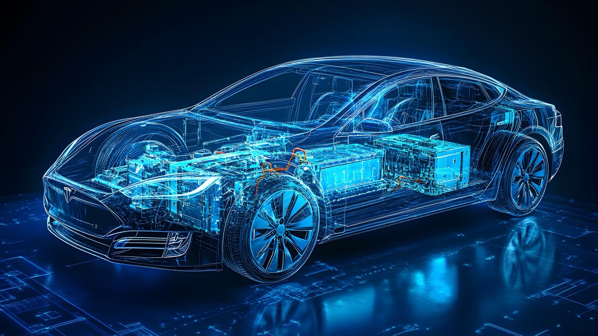
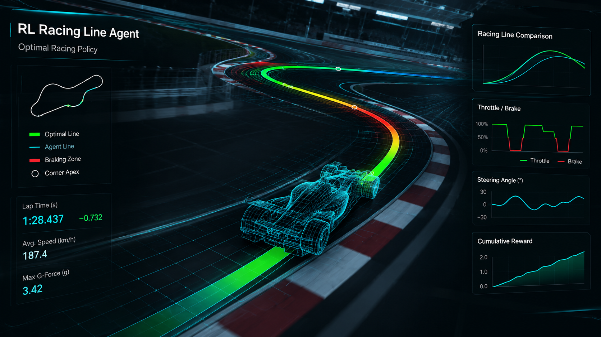

01 / AUTOMOTIVE AI
AI Gear Shift Predictor
Automotive Intelligence · Gear Prediction
EXPLORE PROJECT ↗Exploring the intersection of artificial intelligence, automotive technology and data-driven decision making.

Automotive Intelligence · Gear Prediction
EXPLORE PROJECT ↗
Autonomous Racing · AI Simulation
EXPLORE PROJECT ↗
Financial Modeling · Data Analysis
EXPLORE PROJECT ↗I'm Berra Durak, a Business Administration student based in Germany, with a focus on Artificial Intelligence.
My interests lie at the intersection of business strategy, financial analysis and emerging technologies.
Through my academic studies, professional experience and independent projects, I explore how technology can transform decision-making and create real-world value.
DISCOVER MY GITHUB ↗Business Administration (BWL)
Specialization in Artificial Intelligence
COLOGNE, GERMANYFinance & Business Operations
Practical experience in financial processes, accounting-related operations and business administration.
COLOGNE, GERMANYINTERESTED IN CONNECTING?
Open to conversations about business, artificial intelligence and technology.
VISIT MY GITHUB ↗